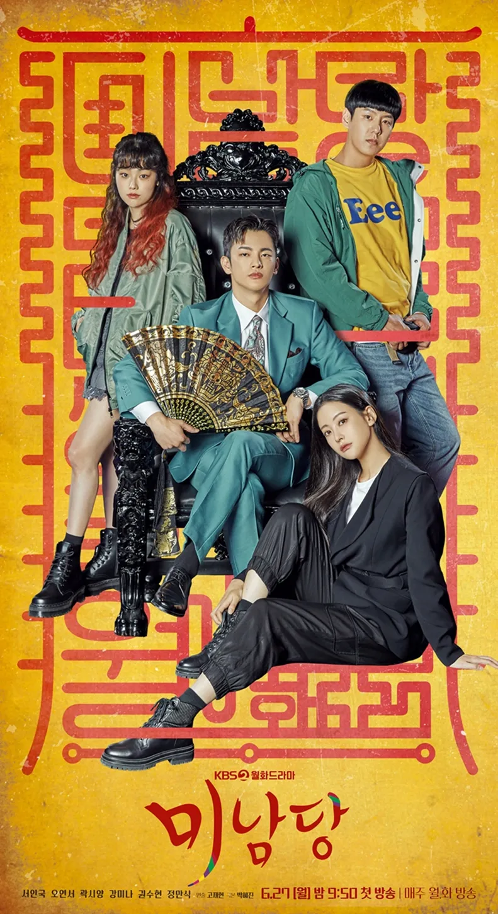
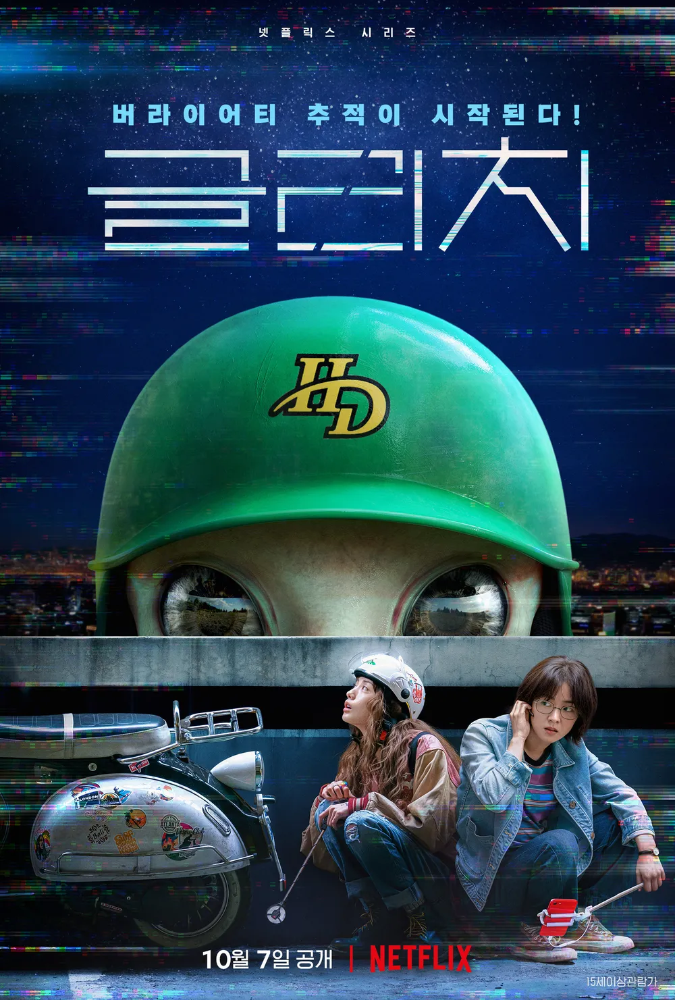
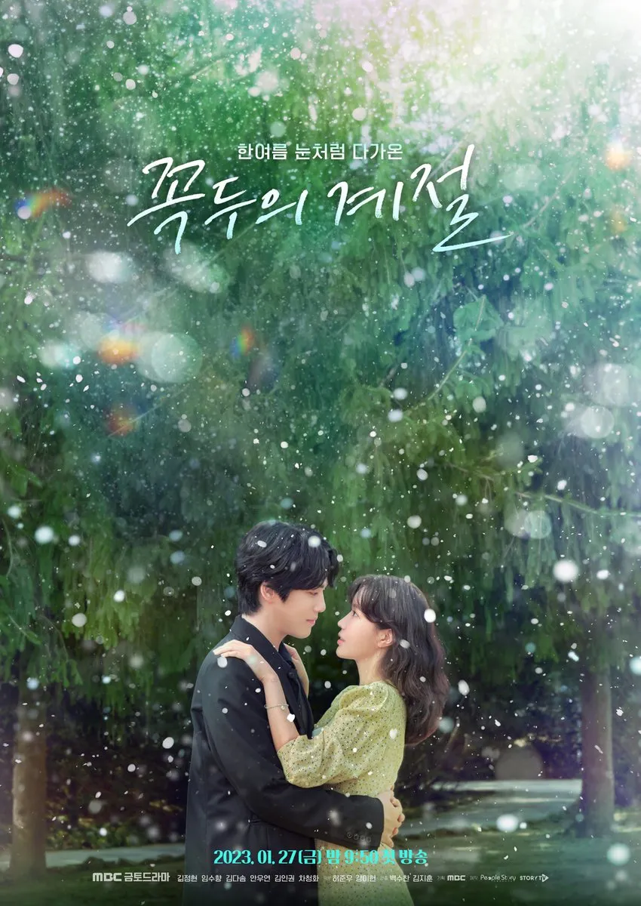
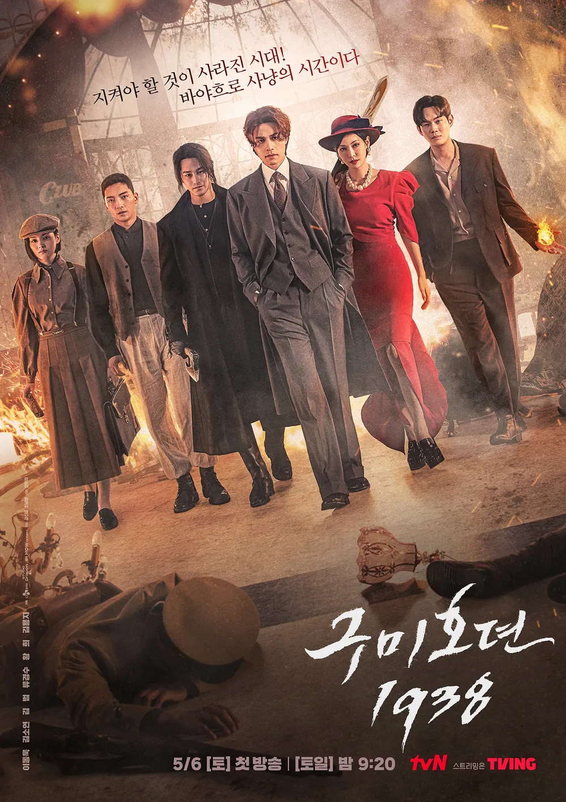
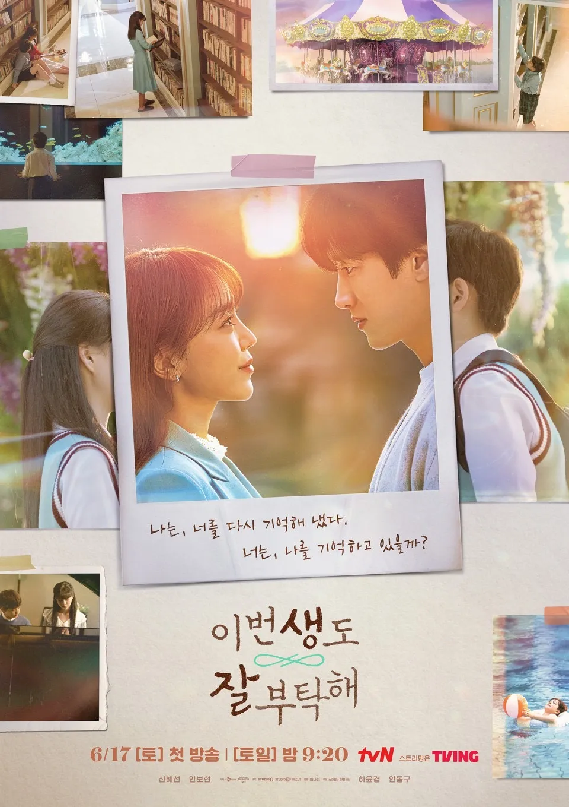
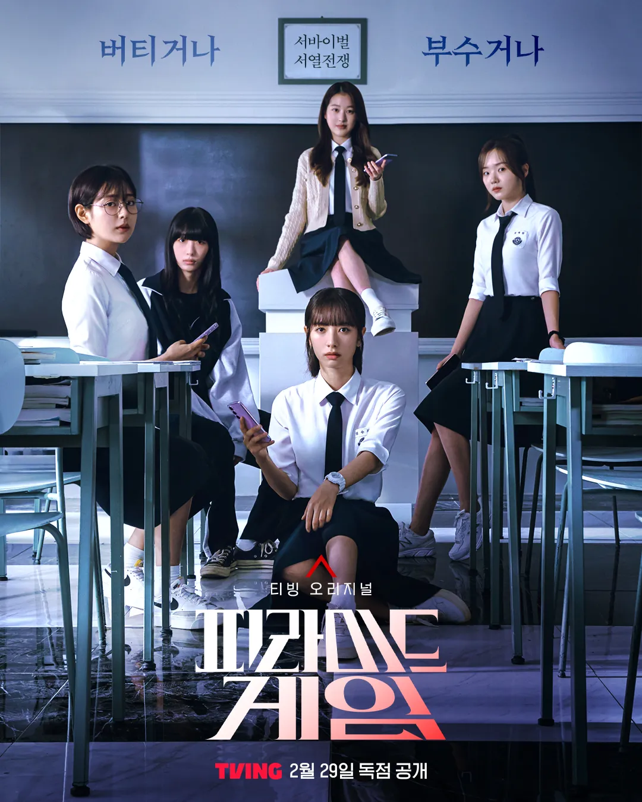
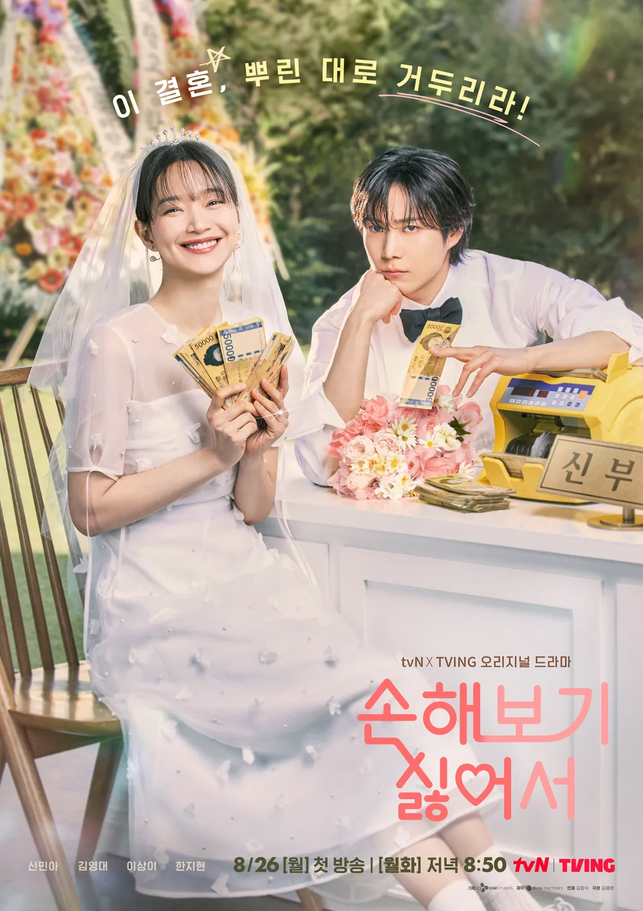

이야기를 따라 걷다
이어진 동행 : 35작품-
- 사랑의 불시착
- 2019.12.14 ~ 2020.02.16
- 16부작 / 15세이상
- 어느 날 돌풍과 함께 패러글라이딩 사고로 북한에 불시착한 재벌 상속녀 윤세리와 그녀를 숨기고 지키다 사랑하게 되는 특급 장교 리정혁의 절대 극비 러브스토리를 그린 드라마
-

- 검사내전
- 2019.12.16 ~ 2020.02.11
- 16부작 / 15세이상
- 미디어 속 화려한 법조인이 아닌 지방도시 진영에서 하루하루 살아가는 평범한 '직장인 검사'들의 이야기
-
- 구미호뎐
- 2020.10.07 ~ 2020.12.03
- 16부작 / 15세이상
- 도시에 정착한 구미호와 그를 쫓는 프로듀서의 판타지액션로맨스
-

- 미남당
- 2022.06.27 ~ 2022.08.23
- 18부작 / 15세이상
- 전직 프로파일러이자, 현직 박수무당의 좌충우돌 미스터리 코믹 수사극
-

- 글리치
- 2022.10.07
- 10부작 / 15세이상
- 외계인이 보이는 지효와 외계인을 추적해온 보라가 흔적 없이 사라진 지효 남자친구의 행방을 쫓으며 '미확인' 미스터리의 실체에 다가서게 되는 4차원 그 이상의 추적극
-

- 꼭두의 계절
- 2023.01.27 ~ 2023.03.24
- 16부작 / 15세이상
- 죽여주는 사신(死神)과 살려주는 의사의 생사여탈 로맨스! 99년마다 인간에게 천벌을 내리러 이승에 내려오는 사신(死神) 꼭두가 신비한 능력을 가진 왕진의사 한계절을 만나 벌이는 판타지 로맨스
-

- 구미호뎐1938
- 2023.05.06 ~ 2023.06.11
- 12부작 / 15세이상
- 1938년 혼돈의 시대에 불시착한 구미호가 현대로 돌아가기 위해 펼치는 K-판타지 액션 활극
-

- 이번 생도 잘 부탁해
- 2023.06.17 ~ 2023.07.23
- 12부작 / 15세이상
- "19회차 인생 로맨스의 최대 라이벌은 18회차의 나?" 전생을 기억하는 ‘반지음’이 꼭 만나야만 하는 '문서하'를 찾아가면서 펼쳐지는 저돌적 환생 로맨스
-

- 피라미드 게임
- 2024.02.29
- 10부작 / 19세이상
- 한 달에 한 번 비밀투표로 왕따를 뽑는 백연여고 2학년 5반, “가해자, 피해자, 방관자”가 모두 섞여버린 그곳에서 점점 더 폭력에 빠져드는 학생들의 잔혹한 서바이벌 서열 전쟁
-

- 손해 보기 싫어서
- 2024.08.26 ~ 2024.10.01
- 12부작 / 15세이상
- 손해 보기 싫어서 결혼식을 올린 여자 손해영과 피해 주기 싫어서 신랑이 된 남자 김지욱의 손익 제로 로맨스 드라마
-

- 오늘부터 인간입니다만
- 2026.01.16 ~ 2026.02.28
- 12부작 / 15세이상
- 인간이 되기 싫은 MZ 구미호와 자기애 과잉 인간의 좌충우돌 망생구원 판타지 로맨스
-
- 제목
- 기간
- 부작 / 나이
- 내용